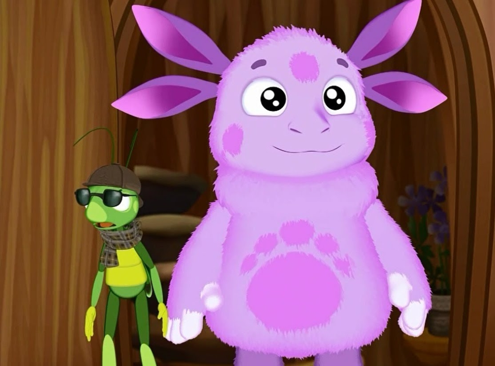

Перелік базових подій, на котрі реагують об'єкти гіпертекстового документу.

Приклад 9.1
Домашня сторінка
Посилання на старий сайт з MAXIMA
звіт до лабораторної роботи №4. Тема - CSS стилі. Правила підключення. Селектори стилів.
звіт до лабораторної роботи №5. Тема - CSS стилі. Стилі блоку.
звіт до лабораторної роботи №6. Тема - CSS стилі. Стилі тексту і шрифта.
звіт до лабораторної роботи №7. Тема - CSS стилі. Стилі налаштування кольорової гами гіпертекстового документа.
звіт до лабораторної роботи №8. Тема - Мова HTML. Форми.
звіт до лабораторної роботи №9. Тема - Мова JavaScript.